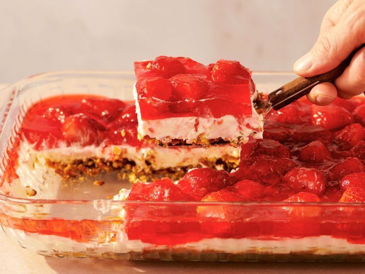

Strawberry Pretzel
Description
Strawberry pretzel salad is an easy dessert with lots of contrasting textures and flavors. It isn't too sweet, nor too salty, and looks really pretty when you make it in a glass dish.

Ingredients
- 2 cups crushed pretzels
- ¾ cup butter, melted
- 3 tablespoons white sugar
- 1 (8 ounce) package cream cheese, softened
- 1 cup white sugar
- 1 (8 ounce) container frozen whipped topping, thawed
- 2 (3 ounce) packages strawberry flavored Jell-O
- 2 cups boiling water
- 2 (10 ounce) packages frozen strawberries
Steps
- Gather all ingredients and preheat the oven to 400 degrees F (200 degrees C).
- Stir crushed pretzels, melted butter, and 3 tablespoons sugar together until well-combined; mix well and press mixture into the bottom of a 9x13-inch baking dish.
- Bake in the preheated oven until set, about 8 to 10 minutes; set aside to cool.
- Place cream cheese and 1 cup sugar in a large bowl. Beat with an electric mixer until smooth; fold in whipped topping. Spread mixture onto cooled crust.
- Dissolve gelatin in boiling water. Stir in still-frozen strawberries and allow to set briefly. Pour and spread over cream cheese layer; refrigerate until set, at least 2 hours.
- Serve and enjoy!
Home